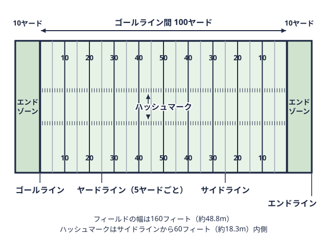
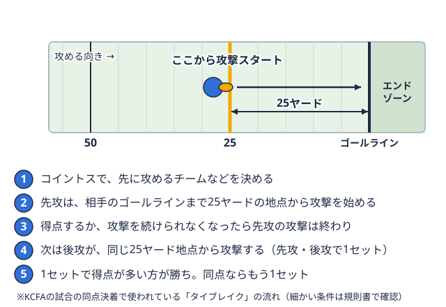

データ 2026-11-03
関東大学アメフトTOP8の8大学まとめ｜創部年・チーム名・練習場と今季の特徴
はじめての方向け
関東大学アメフトのTOP8に出場する8校は、創部年やチーム名、練習場といったプロフィールが各部の公式サイトに散らばっています。この記事では、2026年度のTOP8に所属する8校を1校ずつ公式サイトで確認し、横並びで整理しました。あわせて、関東学生アメリカンフットボール連盟（KCFA）が公表している今季のチーム成績表から、各校の攻撃の傾向も読み取ります。
この記事の掲載ルール（項目と出典）
先に、この記事の作り方を書いておきます。
- 掲載する項目は、チーム名・創部年・練習場の3つと、順位などの成績です。
- 編集部が各部の公式サイトで1校ずつ確認し、確認できた項目だけを書いています。確認できない項目は空欄（「確認できず」）にしており、二次情報から推測して埋めることはしていません。
- 成績は、本サイトの記録データ（出典はKCFAの星取表リーグ戦の全チームの勝敗を、対戦相手ごとに○と●で表にしたもの。用語辞典で見る）と、KCFA公式のチーム成績表を使っています。
- 2026年度の成績は11月3日時点のものです。
法政大学・中央大学・日本体育大学の3校は、創部年を部公式サイトでは確認できませんでした。練習場も、明治大学と東京大学は公式サイトでは確認できませんでした。
一覧表：TOP8 8大学のプロフィール
2026年度のTOP8に所属する8校の一覧です。日本体育大学は2025年度のBIG8で1位となり、2026年度にTOP8へ昇格しました（制度は大学アメフトTOP8とはで解説しています）。
| 大学 | チーム名 | 創部年 | 練習場・拠点 | 2025年度順位（順列） | 2026年度成績（11/3時点） |
|---|---|---|---|---|---|
| 早稲田大学 | ビッグベアーズ | 1934年 | 東伏見総合グラウンド | 1位（7勝0敗） | 4勝2敗 |
| 明治大学 | グリフィンズ | 1934年 | 確認できず | 2位（5勝2敗） | 3勝3敗 |
| 法政大学 | オレンジ | 確認できず | 川崎総合グラウンド | 3位（5勝2敗） | 6勝0敗 |
| 東京大学 | ウォリアーズ | 1957年 | 確認できず | 4位（4勝3敗） | 1勝5敗 |
| 立教大学 | ラッシャーズ | 1934年 | 富士見総合グラウンド | 5位（4勝3敗） | 5勝1敗 |
| 中央大学 | ラクーンズ | 確認できず | 多摩キャンパスラグビー場 | 6位（2勝5敗） | 4勝2敗 |
| 慶應義塾大学 | ユニコーンズ | 1935年（クラブ組織として発足） | 嵐が丘グラウンド | 7位（1勝6敗） | 1勝5敗 |
| 日本体育大学 | トライアンファントライオン | 確認できず | 東京・世田谷キャンパス 多目的グラウンド | BIG8で1位 | 0勝6敗 |
創部年で見る：1934年のルーツ校3校と戦後のチーム
公式サイトで創部年を確認できた5校を並べると、次のようになります。
- 1934年：早稲田大学、明治大学、立教大学
- 1935年：慶應義塾大学（クラブ組織として発足）
- 1957年：東京大学（9月創部）
早稲田大学の部の紹介（早稲田大学競技スポーツセンター）には、立教・明治と並ぶルーツ校という記述があります。明治大学の公式サイトでは、1934年12月に立教大学とともに誕生したと説明されています。立教大学は1934年10月28日の創部で、ポール・ラッシュが東京学生米式蹴球連盟の初代理事長を務めたことが公式サイトに記されています。
東京大学は1957年9月に創部し、1959年にKCFAへ加盟しました。創部年が確認できなかった法政・中央・日本体育の3校は、ここでは順番づけをしていません。
今季の攻撃スタイルをKCFA公式の数字で見る
KCFAは「2026年度チーム成績表」を公表しています。ここで使うのは第5節時点の数値で、各校4試合分の1試合平均です。シーズン最終値ではありません。4試合という少ない試合数からの読み取りなので、対戦相手の違いや1試合ごとの偏りの影響を受けます。ヤード距離の単位で、1ヤードは約0.9メートル。フィールドには5ヤードごとに線が引かれている。 
| 大学 | ラッシュ獲得 | パス獲得 | 合計獲得 | 喪失（守備） | ターンオーバー+/- |
|---|---|---|---|---|---|
| 早稲田 | 211.3 | 120.3 | 331.5 | 243.5 | -3 |
| 明治 | 137.3 | 154.3 | 291.5 | 274.8 | 0 |
| 法政 | 192.8 | 167.0 | 359.8 | 287.0 | 0 |
| 東京 | 202.0 | 65.0 | 267.0 | 314.5 | -6 |
| 立教 | 119.0 | 196.5 | 315.5 | 226.5 | +6 |
| 中央 | 178.5 | 209.8 | 388.3 | 353.8 | -2 |
| 慶應 | 113.8 | 87.8 | 201.5 | 302.3 | +5 |
| 日体大 | 97.5 | 117.0 | 214.5 | 367.3 | 0 |
単位はヤード（1試合平均）です。「喪失（守備）」は守備側が相手に許した合計ヤード、「ターンオーバー+/-」は守備で奪った攻撃権（インターセプト相手の投げたパスを空中で奪い取ること。奪った側が攻撃権を得る。用語辞典で見る・ファンブルリカバー）と攻撃で失った攻撃権の差で、4試合の合計値です。
ランが中心のチーム（早稲田・東京）
早稲田はラッシュ獲得が211.3ヤード、パス獲得が120.3ヤードで、ラッシュの比率が高い傾向が見られます。東京もラッシュが202.0ヤードに対してパスは65.0ヤードで、ラッシュを軸にした攻撃の傾向があります。法政はラッシュ192.8ヤード、パス167.0ヤードと両方を使っており、1試合平均の得点は28.5、失点は16.8でした。
パスの比率が高いチーム（中央・立教・明治）
中央はパス獲得が209.8ヤードで8校の中で最も多く、ラッシュ178.5ヤードとあわせた合計獲得388.3ヤードも8校で最多です。立教はパス196.5ヤードに対してラッシュ119.0ヤード、明治もパス154.3ヤードとラッシュ137.3ヤードで、パスの比率がやや高い傾向が見られます。
守備とターンオーバー（立教・慶應）
立教の1試合平均の喪失ヤードは226.5ヤードで8校の中で最も少なく、ターンオーバー+/-も+6で最多でした。慶應は+5で、獲得ヤードは少ない一方でターンオーバー面ではプラスになっています。東京は-6で、8校の中で最も低い値です。いずれも4試合だけの数字なので、今後の試合で変わる可能性があります。
8大学のプロフィール
ここからは1校ずつ、公式サイトで確認できた内容を中心に紹介します。順位は本サイトの記録データによるものです。
早稲田大学ビッグベアーズ
創部は1934年で、1983年に愛称を「BIG BEARS」としました。練習場は東伏見総合グラウンドです。甲子園ボウルへの初出場は2002年で、日本学生選手権の準優勝は2002・2010・2015・2016年度と記されています。大学の紹介ページでは、未経験者が約4割とされています。順位（順列）は2023年度が4位、2024年度が2位、2025年度が1位で、今季は11月3日時点で4勝2敗です。→ 早稲田大学のチームページ
明治大学グリフィンズ
1934年12月に立教大学とともに誕生しました。愛称は、鷲の頭、獅子の胴体、翼を持つギリシャ神話のグリフィンに由来します。甲子園ボウルには1948年に初出場し、1985年は関西学院大学に46-48で敗れました。順位（順列）は2023年度が3位、2024年度が6位、2025年度が2位で、今季は11月3日時点で3勝3敗です。練習場は公式サイトでは確認できませんでした。→ 明治大学のチームページ
法政大学オレンジ
練習場は、川崎市中原区木月大町にある法政大学川崎総合グラウンドです。創部年は部公式サイトでは確認できませんでした。順位（順列）は2023年度が1位、2024年度が1位、2025年度が3位で、今季は11月3日時点で6勝0敗です。10月31日の早稲田戦は21-17で勝っています。→ 法政大学のチームページ
東京大学ウォリアーズ
1957年9月に創部し、1959年にKCFAへ加盟、1965年に初めて1部へ昇格しました。1980年に部員公募でチーム名を「WARRIORS」と決め、2018年にBIG8で優勝して、史上初のTOP8昇格を果たしています。部の公式サイトの沿革では、2024年は4勝3敗で関東3位タイながら得失点差で全国決勝トーナメント進出を逃し、2025年は4勝3敗で関東4位とされています。2023年度は0勝6敗で7位でした。今季は11月3日時点で1勝5敗です。練習場は公式サイトでは確認できませんでした。→ 東京大学のチームページ
立教大学ラッシャーズ
1934年10月28日に創部しました。甲子園ボウルには6回出場し、優勝は4回（1951・1952・1960・1965年）で、1965年は22-22で両校優勝と記されています。練習場の富士見総合グラウンドは、2013年に人工芝化され、Paul Rusch Athletic Centerが完成しました。順位（順列）は2023年度が2位、2024年度が4位、2025年度が5位で、今季は11月3日時点で5勝1敗です。11月1日の慶應戦は15-15で、タイブレーク同点で終わった試合に勝敗をつける延長戦。決まった地点から両チームが1回ずつ攻撃する。 
中央大学ラクーンズ
練習場は中央大学多摩キャンパスのラグビー場です。公式サイトの部員募集ページでは、戦略・広報・会計・渉外も学生が担う学生中心の運営で、スローガンは「ALL ONE」と紹介されています。創部年は部公式サイトでは確認できませんでした。順位（順列）は2023年度が6位、2024年度が8位、2025年度が6位で、今季は11月3日時点で4勝2敗です。→ 中央大学のチームページ
慶應義塾大学ユニコーンズ
1935年にクラブ組織として発足しました。公式サイトによると、第1回甲子園ボウルで同志社大学に45-0で勝ち、「初代学生王座」となっています。この大会は1946年度シーズンの位置づけで、試合は1947年4月に行われました（詳しくは甲子園ボウルの解説にあります）。1948年も関西大学に14-7で勝利しています。1999年に部史上初めて2部へ降格し、2000年は全勝で1部へ復帰しました。練習場は横浜市港北区日吉の嵐が丘グラウンドです。順位（順列）は2023年度が5位、2024年度が3位、2025年度が7位で、今季は11月3日時点で1勝5敗です。→ 慶應義塾大学のチームページ
日本体育大学トライアンファントライオン
チーム名は「TRIUMPHANT LION（トライアンファント ライオン）」で、ホームグラウンドは世田谷区深沢にある日本体育大学東京・世田谷キャンパスの多目的グラウンドです。創部年は部公式サイトでは確認できませんでした。2025年度はBIG8で1位となり、2026年度にTOP8へ昇格しました。今季は11月3日時点で0勝6敗です。→ 日本体育大学のチームページ
直近3シーズンの順位推移
本サイトの記録データ（出典はKCFAの星取表）にある、TOP8の順列（勝ち点リーグ戦の順位を決める点数。関東学生リーグでは、勝ち3点・引き分け1点・負け0点。用語辞典で見るが並んだ場合に当該校間の成績などで決まる最終的な並び）です。星取表の「順位」欄では同じ勝ち点のチームが同順位（例: 2024年度の東京大学は3位タイ）になるため、この記事では1校ずつ順番が決まる順列で統一しました。2023年度のTOP8は7チームでした。
| 大学 | 2023年度 | 2024年度 | 2025年度 |
|---|---|---|---|
| 早稲田 | 4位（4勝2敗） | 2位（6勝1敗） | 1位（7勝0敗） |
| 明治 | 3位（4勝2敗） | 6位（2勝5敗） | 2位（5勝2敗） |
| 法政 | 1位（5勝1敗） | 1位（7勝0敗） | 3位（5勝2敗） |
| 東京 | 7位（0勝6敗） | 5位（4勝3敗） | 4位（4勝3敗） |
| 立教 | 2位（5勝1敗） | 4位（4勝3敗） | 5位（4勝3敗） |
| 中央 | 6位（1勝5敗） | 8位（0勝7敗） | 6位（2勝5敗） |
| 慶應 | 5位（2勝4敗） | 3位（4勝3敗） | 7位（1勝6敗） |
| 日体大 | BIG8 | BIG8 | BIG8（1位） |
3シーズンで見ると、3年続けて3位以内だったのは法政だけで、早稲田は4位から2位・1位と順位を上げています。明治・東京・立教・慶應は、年によって順位が上下しています。通算の勝率は関東アメフト通算勝率ガイド、強さの比較はアメフトの強い大学ガイドも参考にしてください。
2026年度の残り日程（最終節4試合）
11月3日時点で、残りは最終節の4試合です。日程は予定で、会場はいずれもアミノバイタルフィールドです。
- 11月14日（予定）：慶應義塾大学 対 日本体育大学
- 11月14日（予定）：立教大学 対 中央大学
- 11月15日（予定）：法政大学 対 東京大学
- 11月15日（予定）：早稲田大学 対 明治大学
最新の日程や結果は、公式の発表をご確認ください。
本サイトで各チームを追う方法
本サイトでは、TOP8の情報を次のページで見られます。
- チーム一覧：8校のページへの入口です。
- 順位表：今季の勝敗と勝ち点を確認できます。
- 日程・結果：試合日程と結果をまとめています。
- 記録：過去の成績を確認できます。
- 各校のチームページ：早稲田、明治、法政、東京、立教、中央、慶應、日本体育
まとめ
- 2026年度のTOP8は、早稲田・明治・法政・東京・立教・中央・慶應義塾・日本体育の8校です。
- 公式サイトで創部年を確認できたのは5校で、早稲田・明治・立教が1934年、慶應義塾が1935年、東京が1957年です。法政・中央・日本体育は部公式サイトでは確認できませんでした。
- 第5節時点（4試合）のKCFA成績表では、早稲田・東京にラッシュ中心、中央・立教・明治にパスの比率が高い傾向が見られます。ただし少ない試合数からの読み取りで、強弱を示すものではありません。
- 最終節は11月14日・15日の予定です。
参考リンク
この部活・競技を応援したい方へ
協賛・応援はこちらから。
取材してほしい部活を募集中
あなたの部活・チームを取材してほしい方はこちらから。
オフシーズン・引退後に、長期インターンという選択
部活で培った力を実務で試す。16タイプ診断（30秒）で合う企業がわかります。